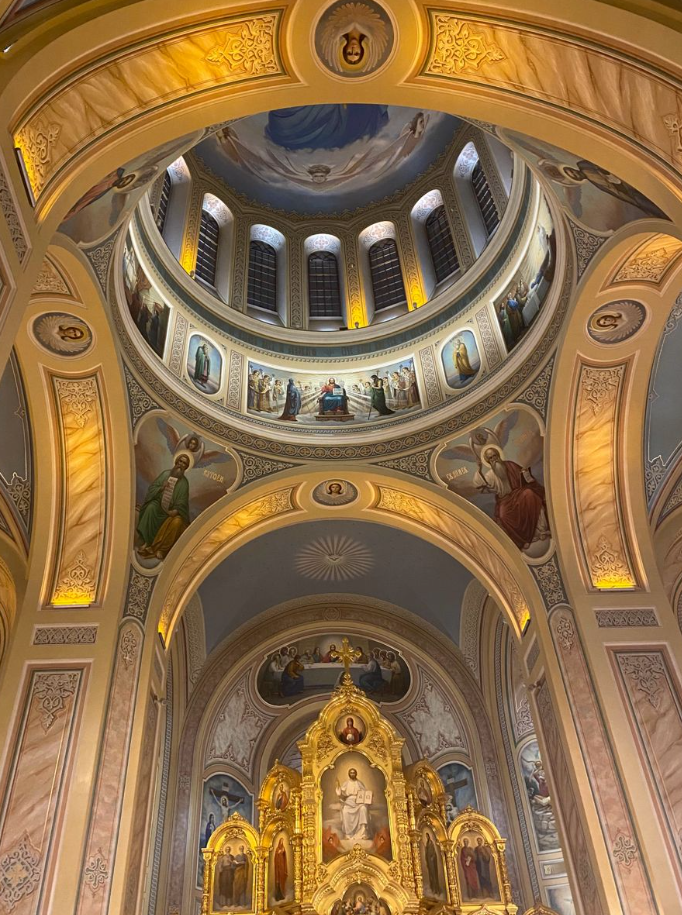

Cathedral Church of the Blessed Virgin Mary is a Georgian Orthodox cathedral in Batumi, Adjara. It represents a cultural
heritage site of national importance. The temple, built in the early 20th century, has both architectural and artistic value.
History
Cathedral Church of the Blessed Virgin Mary was built in 1897 by Zubalashvili brothers. The church was built in the Neo-
Gothic style with three domes. During the Soviet period, the church was closed and converted into a high-voltage laboratory
. Later, the church was transferred to the Georgian Orthodox Church. In 1989, the church was consecrated by Catholicos- Pat
riarch of Georgia Ilia II. 5000 people were baptized on this day in the church. The priest David Shiolashvili was appointed
as the head of the church, who was blessed as a chief priest by the Catholicos-Patriarch of Georgia Ilia II on this important day. Today,
the Cathedral Church of the Blessed Virgin Mary is the main cathedral of the Diocese of Batumi and Lazeti.
